Sobre o modpack
O Gurupicraft combina conteúdo pré-histórico, paleontologia, genética, tecnologia, automação, exploração, decoração, super-heróis e diversas melhorias de qualidade de vida.
Minecraft
1.21.1
Mod Loader
NeoForge
Mods únicos
137
Instalação
-
Baixe o pacote completo com CurseForge, modpack installer e Hamachi:
Baixar pacote completo do Gurupicraft - Extraia o arquivo ZIP.
- Instale o CurseForge e faça login na sua conta.
- Instale o Hamachi e conclua a configuração.
- Execute o instalador do modpack:
Gurupicraft.exe. -
Abra o Hamachi e conecte-se à rede:
Rede: GROSSI-99
Senha: 12345678
Imagens de mods presentes
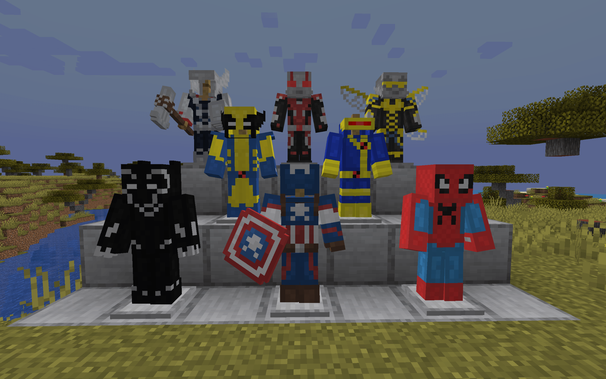
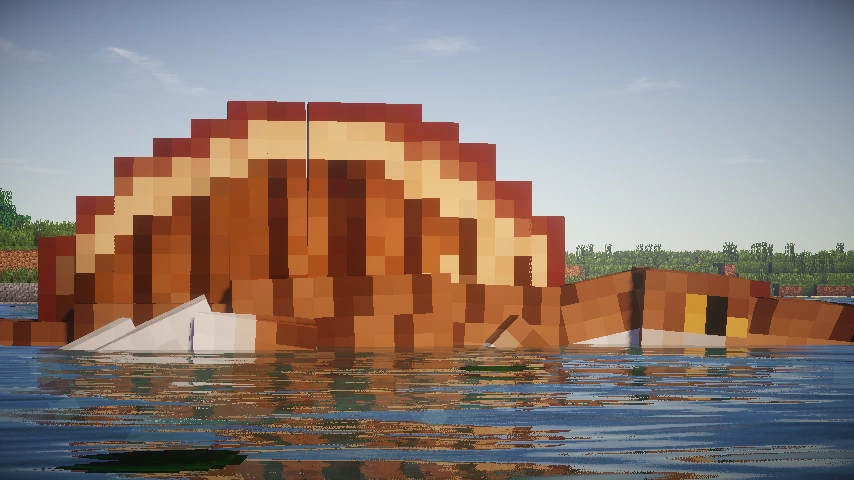
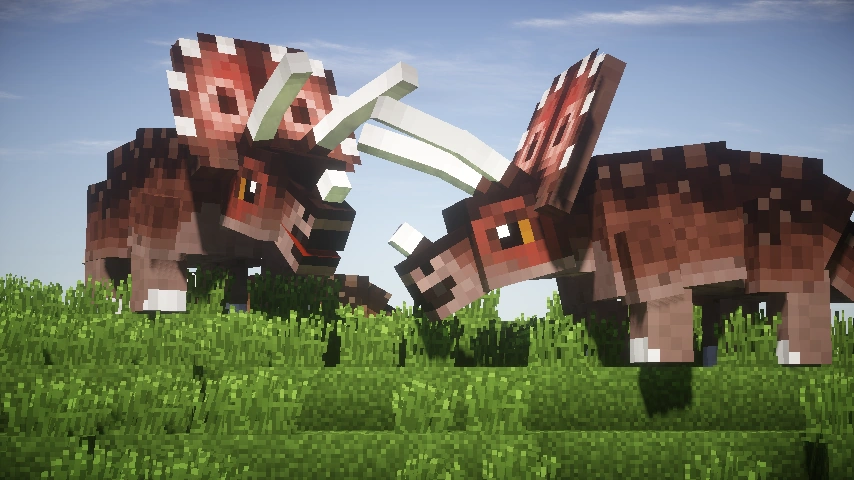
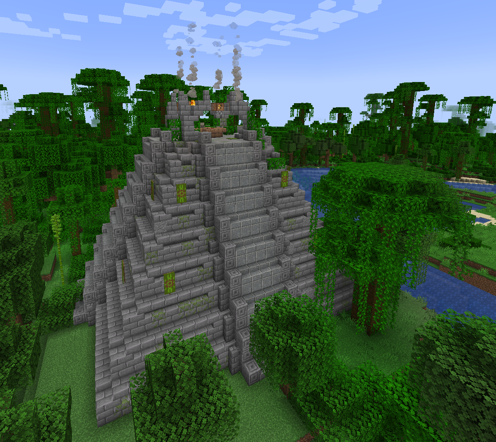
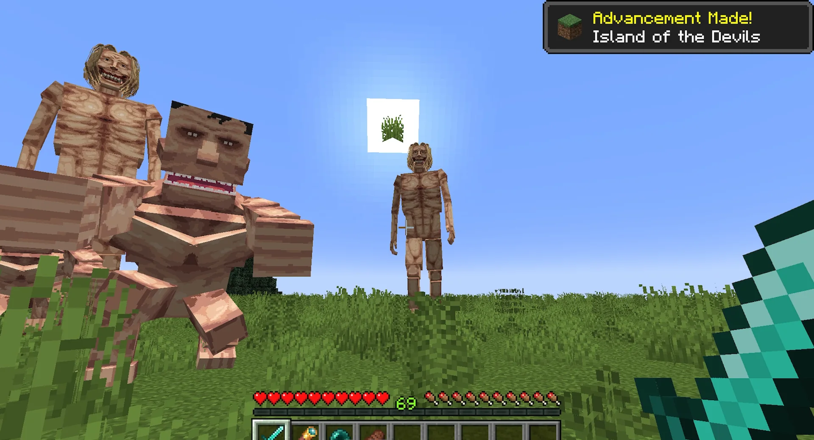
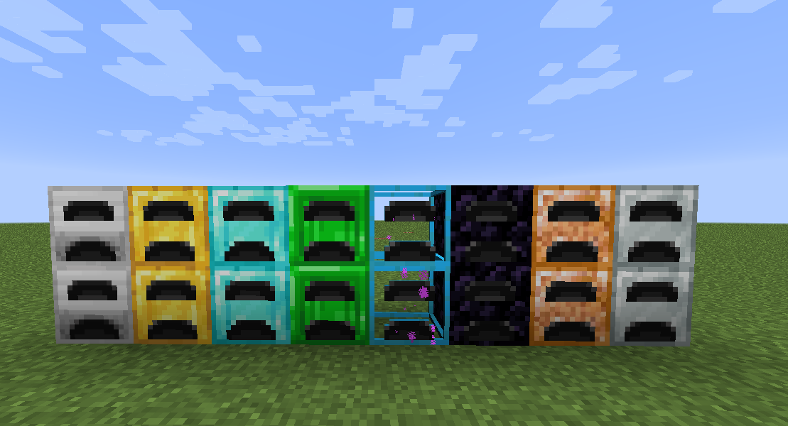
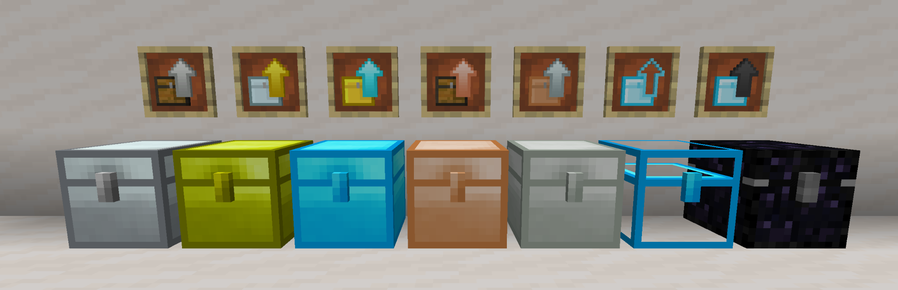
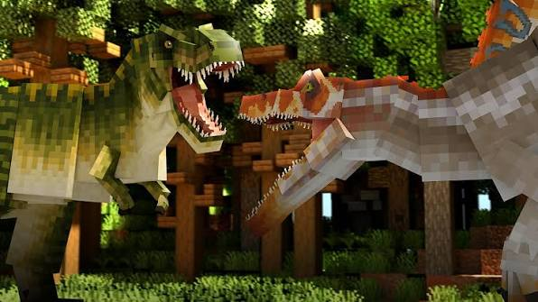
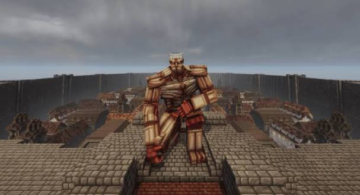
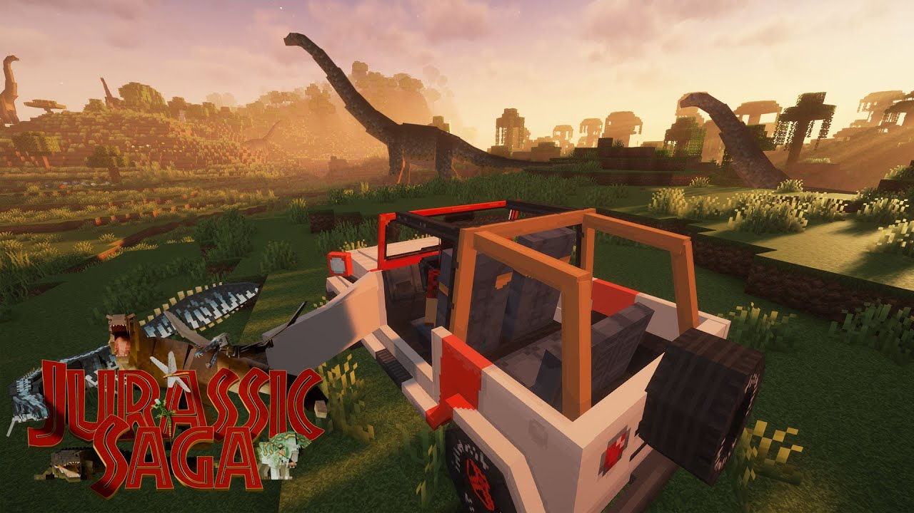
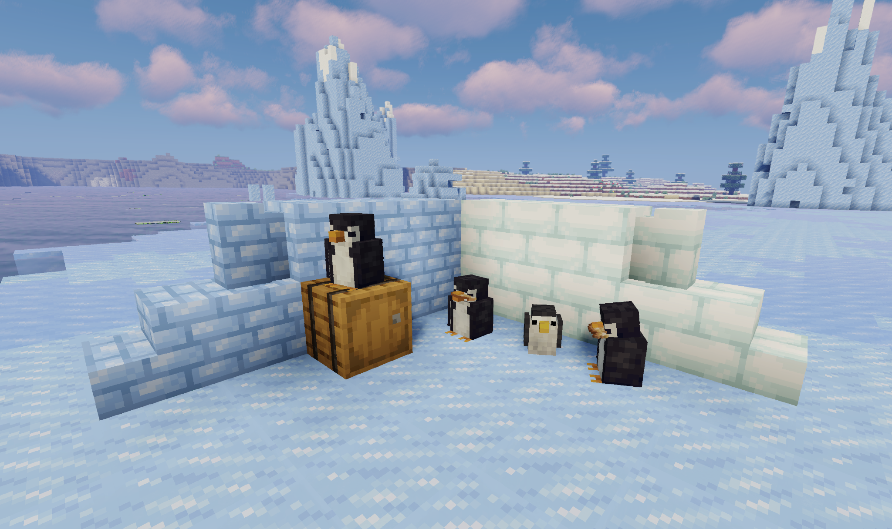
Principais categorias
Dinossauros
Pré-história
Tecnologia
Automação
Exploração
Construção
Super-heróis
Qualidade de vida